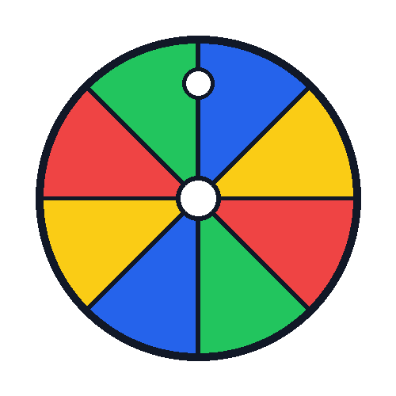

Animierte Scheibe
Mit den Tasten L und R wird die Scheibe um jeweils 15° gedreht, mit A wird die automatische Drehung gestartet oder gestoppt. Alternativ können die Buttons als Bedienfläche genutzt werden.

Aktueller Rotationszustand: 0°
Automatische Drehung: Aus
Animierter Hase
Der Hase wird über ein Sprite-Sheet mit 8 Animationsphasen animiert.
Hasenanimation: Aus
Dokumentation
Technische Umsetzung
Die Anwendung wurde mit HTML, CSS und JavaScript umgesetzt. Die Scheibe besteht aus 24 Einzelbildern in jeweils 15°-Schritten. JavaScript wechselt abhängig von der Benutzereingabe das angezeigte Bild. Mit L und R kann die Scheibe schrittweise gedreht werden, während mit A eine automatische Drehung gestartet oder gestoppt wird. Alternativ können die Buttons als Bedienfläche genutzt werden. Der Hase wurde als Sprite-Sheet mit 8 Animationsphasen umgesetzt. Die einzelnen Phasen werden nacheinander über die CSS-Eigenschaft background-position angezeigt.
Bedienung
- L: Scheibe um 15° nach links drehen
- R: Scheibe um 15° nach rechts drehen
- A: Automatische Drehung starten oder stoppen
- Animation starten: Hasenanimation starten oder stoppen
Materialquellen
Hase:
https://pixabay.com/de/photos/hase-tier-natur-pelz-ohren-2649157/
Die Grafiken der Scheibe wurden selbst erstellt.